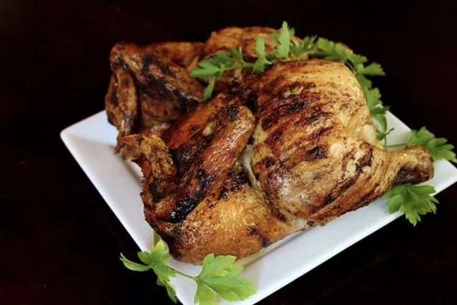

Rotisserie Chicken

How to Make Rotisserie Chicken
This rotisserie chicken recipe is so easy to make with simple seasonings on your grill. Occasional basting with a butter mixture ensures crispy skin and moist meat. Our family loves this! Rotisserie chicken
is perfect as the main dish with French fries and coleslaw, or with any number of other sides.
You'll find a detailed ingredient list and step-by-step instructions in the recipe below, but let's go over the
basics:
Ingredients
- Whole Chicken:This recipe is meant for a whole 3-pound chicken. If your chicken is larger or smaller, you'll have to adjust the
cooking time.
- Butter: Butter keeps the chicken moist and juicy, while giving the seasonings something to stick to.
- Seasonings: The rotisserie chicken is simply seasoned with salt, pepper, and paprika.
- Sugar Two tablespoons of white sugar add subtle sweetness and enhance the flavor of the
sauce.
More Ingredients:
- 1 (3 pound) whole chicken
- 1 pinch salt
- ¼ cup butter, melted
- 1 tablespoon salt
- 1 tablespoon ground paprika
- ¼ tablespoon ground black pepper
How to Make Rotisserie Chicken Step-By-Step
Here's a very brief overview of what you can expect when you make rotisserie chicken:
- Preheat an outdoor grill for high heat and lightly oil the grate.
- Season chicken cavity with a pinch of salt. Tie legs together with kitchen string; then tie wings to the bird. Secure
chicken on a rotisserie attachment.
- Place rotisserie over the preheated grill and cook for 10 minutes.
- Meanwhile, quickly mix together butter, 1 tablespoon of salt, paprika, and pepper. Turn the grill down to medium and
baste chicken with butter mixture.
- Close the lid and cook over medium heat, basting occasionally, until chicken is cooked through and the internal
temperature reaches 180 degrees F (83 degrees C), 1 to 1 1/2 hours.
- Remove chicken from the rotisserie and let rest for 10 to 15 minutes before carving.